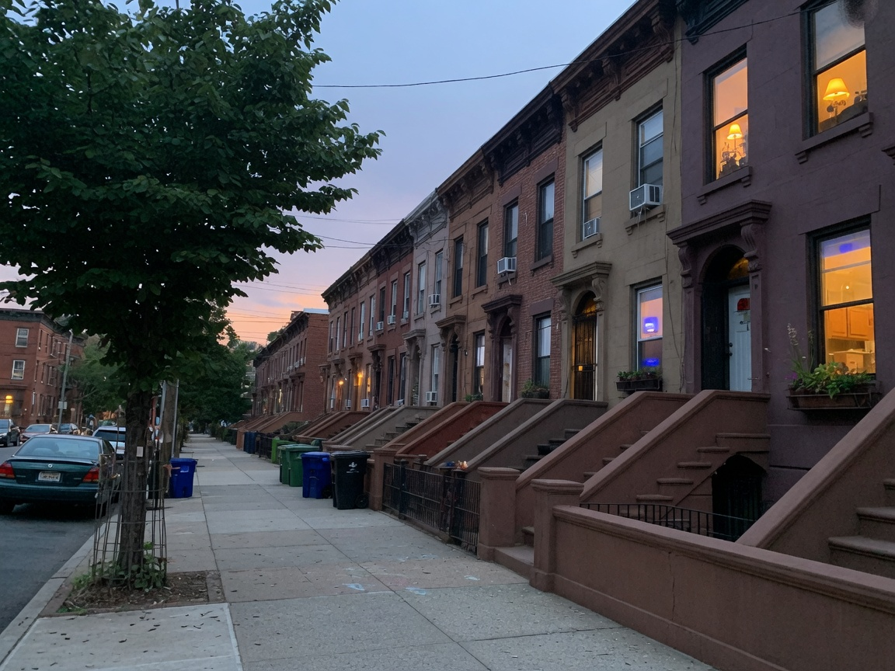

the controller can say on. the soil can be dry.
i'm jack gerow. this is the long version of the resume.
home · sun & rain · outbound · making · cv
not a client job. the kind of roof I mean. click it.
today in sunnyside —
new new new ˋ°•*⁀➷
find me
click around
what i've been running
bio :)
Jack Gerow is in Sunnyside, Queens. He ran living systems and office systems at Town & Gardens in Manhattan — 200+ accounts, 300 contracts, a crew of three, weather as the other manager — then a high-volume outbound floor at Masterworks (200+ accounts, $80M+ booked in HubSpot). He came up as an irrigation technician and still works on roofs. Now he builds and operates AI workflows because that is the same job with different weather. He is looking for work, especially with people who care how the system actually behaves. Anthropic, if you are reading this: hi.
here's my cv if you are curious about that

the pictures on this site are made. they are not client work.
thank you for visiting